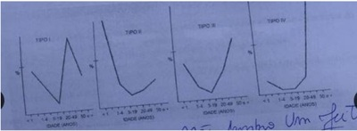
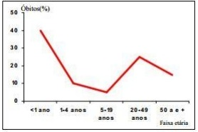

Questão 1 · Morbidade · 4000141852Duas localidades ‘A’ e ‘B’ apresentam semelhantes padrões epidemiológicos e demográ cos e realizam os mesmos testes diagnósticos para a Covid 19. Se a localidade ‘A’ realiza mais testes diagnósticos que a localidade B, pode-se a rmar que os dados epidemiológicos de ‘Coe ciente de Mortalidade’, de ‘Prevalência’ e de ‘Taxa de Letalidade’ para a Covid 19 encontram-se, respectivamente, na localidade ‘A’, em comparação com a localidade ‘B’, da seguinte forma:
A maior, menor, igual.
B maior, maior, menor.
C maior, maior, maior.
D menor, menor, maior.
E menor, menor, menor.
Revisar: possível letra faltando em enunciado
Questão 3 · Medicina Preventiva · Medidas de saúde coletiva · Epidemiologia · 4000138124Em relação aos óbitos ocorridos, qual dado é usado para o cálculo da taxa de mortalidade infantil neonatal?
A Até 28 dias de vida.
B Entre O e 6 dias de vida.
C Até 2 meses de vida.
D Até 6 meses de vida.
E Até 12 meses de vida.
Questão 4 · Medicina Preventiva · 4000134202Não são medidas para redução de mortalidade materna e
A Administração de 10 UI de oxitocina após parto.
B Uso de sulfato de magnésio em pacientes com pré-eclâmpsia.
C Prescrição de antibiótico venoso em paciente com sepse.
D Transfusão de hemoderivado em paciente com hemorragia puerperal grave.
Questão 5 · Letalidade · 4000133886De acordo com o boletim epidemiológico e assistencial Covid-19 nº 23, da SES-MG, na semana epidemiológica 39, Minas Gerais tinha, em 23/09/2020, uma população de 21.040.662 habitantes, 274.459 casos registrados de Covid-19 e 6.839 óbitos pela doença. Analise as informações a seguir sobre a Covid-19 em Minas Gerais. I. A letalidade da doença é de 32,5/100.000. II. A letalidade da doença é de 24,9 /10.000. III. A incidência da doença é de 13,0/1.000. IV. A prevalência da doença é de 1,3%. Estão corretas as informações presentes em
A I e III, apenas.
B I e IV, apenas.
C II e III, apenas.
D II e IV, apenas.
Questão 6 · Medicina Preventiva · 4000130872Em nosso meio, as principais causas de mortalidade materna e neonatal são, respectivamente:
A hemorragias e prematuridade.
B hemorragias e sepse neonatal.
C pré-eclâmpsia e prematuridade.
D infecção puerperal e sepse neonatal.
Questão 7 · · 4000129575Conceitos f undamentais óbito materno óbito por causa materna causas obstétricas diretas e causas obstétricas indiretas A OMS conceitua morbidade materna grave como uma complicação que ocorra durante a gravidez, o parto ou nos 42 dias iniciais do puerpério, e que coloque em risco a vida da mulher (Pattinson et al., 2009). O estudo da mortalidade materna é um dos melhores indicadores da qualidade de saúde e atenção à mulher. Com relação à mortalidade materna, é correto afirmar:
A As principais causas obstétricas diretas das mortes maternas são: hemorragia, hipertensão e infecção.
B As principais causas obstétricas indiretas são: prematuridade, placenta prévia, diabetes gestacional, doença cardiovascular e obesidade.
C A taxa de mortalidade materna por causas obstétricas indiretas tem-se mantido estável, fato que pode ser atribuído às medidas adotadas na atenção humanizada ao parto.
D A taxa de mortalidade materna por causas obstétricas diretas vem diminuindo devido às medidas adotadas para a redução da transmissão vertical do HIV/AIDS e da sífilis congênita.
Questão 8 · Razão de Mortalidade Proporcional RMP ou Índice de SwaroopUemura · 4000124317O indicador que mensura a proporção de pessoas que morreram com 50 anos ou mais de idade em relação ao total de óbitos em determinada população e área é conhecido como:
A índice de Moraes.
B índice de mortalidade proporcional por causa específica.
C índice de Swaroop & Uemura.
D índice de mortalidade proporcional por local de residência.
E quantificação de Guedes.
Questão 9 · Mortalidade Específ ica · 4000119500Em um determinado ano, numa população hipotética de 500.000 habitantes, houve 500 casos de câncer de próstata. Neste mesmo ano, houve 200 mortes nesta população, sendo 10% destas por câncer de próstata. O coe ciente de mortalidade nessa população por câncer de próstata é:
A 20 x 1000.
B 200 x 1000.
C 0.5 x 1000.
D Impossível de calcular com as informações dadas.
Revisar: possível letra faltando em enunciado
Questão 10 · Mortalidade · 4000111997Corresponde ao indicador sanitário mais utilizado nas estatísticas vitais:
A fecundidade.
B natalidade.
C letalidade.
D mortalidade.
E morbidade.
Questão 11 · Medicina Preventiva · 4000107891Quando dizemos que uma determinada localidade tem taxa de mortalidade por câncer de 32/100.000 habitantes, estamos nos referindo à taxa de:
A Mortalidade específica por causa
B Mortalidade geral
C Mortalidade proporcional por causa
D Letalidade proporcional por causa
Questão 12 · Mortalidade Proporcional · 4000086634Para o cálculo da mortalidade proporcional por doenças cardiovasculares é necessário conhecer:
A os óbitos por faixa etária
B o total de óbitos
C o número de casos de doenças cardiovasculares
D a população sob risco de doenças cardiovasculares
Questão 13 · Mortalidade · 4000072896Assinale a alternativa correta em relação ao coe ciente geral de mortalidade de uma determinada população em um período de tempo definido.
A O denominador é o número total de doentes.
B O denominador é o número total de óbitos.
C O numerador é o número representativo da população.
D O numerador é o número total de doentes.
E O numerador é o número total de óbitos.
Revisar: possível letra faltando em enunciado
Questão 14 · Coef iciente ou Taxa de mortalidade neonatal precoce · 4000063072A taxa de mortalidade infantil é um indicador de saúde dos mais sensíveis à situação de saúde e condição social de uma população. No Rio de Janeiro, esta taxa tem decrescido nos últimos anos, principalmente devido à queda de óbito infantis tardios. Em relação a mortalidade infantil, é correto a rmar que a taxa de mortalidade neonatal precoce corresponde ao número de óbitos de:
A Crianças de 0 a 6 dias de vida completos, por mil nascidos vivos, na população residente em determinado local, no ano considerado;
B Menores de um ano de idade, por mil nascidos vivos, na população residente em determinado local, no ano considerado;
C Crianças de 0 a 28 dias de vida completos, por mil nascidos vivos, na população residente em determinado local, no ano considerado;
D Crianças de 0 a 1 dias de vida completo, por mil nascidos vivos, na população residente em determinado local, no ano considerado.
Questão 15 · Indicadores especiais de mortalidade · 4000042258Sobre indicadores de saúde, é correto afirmar:
A Coeficiente de letalidade é a distribuição de mortalidade por uma afecção em uma determinada população e período de tempo.
B Coeficiente de mortalidade materna indica a proporção entre mortalidade materna e mortalidade infantil.
C Coeficiente de mortalidade materna é a razão entre mortalidade materna por 100.000 nascidos vivos, correlacionando-se bem com a qualidade da assistência pré-natal e ao parto.
D Coeficiente de mortalidade materna independe da qualidade de vida e qualidade da assistência pré-natal e ao parto.
E Taxa de mortalidade é a proporção de óbitos em uma doença e é um bom indicador da qualidade dos serviços hospitalares, pois doenças graves exigem atenção de maior complexidade.
Questão 16 · · 4000039988Conceitos f undamentais óbito materno óbito por causa materna causas obstétricas diretas e causas obstétricas indiretas Puérpera, 8º dia pós-parto, apresenta quadro séptico de foco endometrial, evoluindo para óbito. Trata-se de morte materna:
A Obstétrica direta
B Obstétrica indireta
C Não obstétrica
D Acidental
Questão 17 · Coef iciente ou Taxa de mortalidade neonatal · 4000032532A Taxa de Mortalidade Infantil (TMI) é considerada bom indicador para descrever e analisar as condições de vida e saúde de uma população. Isso se justi ca pelo fato de que a criança pequena é mais sensível às condições socioeconômicas que repercutem no meio ambiente onde ela vive. Um dos seus componentes é a TMI neonatal, que inclui:
A apenas óbitos de menores de 7 dias de idade (até 6 dias de vida)
B apenas óbitos de menores de 28 dias de idade (até 27 dias de vida)
C apenas óbitos de menores de 30 dias de idade (até 29 dias de vida)
D apenas óbitos de menores de 31 dias de idade (até 30 dias de vida)
Revisar: possível letra faltando em enunciado
Questão 18 · Medicina Preventiva · 4000027896Érica é pediatra do Hospital Regional e é convidada pela Secretaria Municipal de Saúde a participar do Comitê de Mortalidade Materno Infantil de seu município, ajudando na quanti cação dos indicadores básicos de saúde e elaborando estratégias para melhoria desses indicadores. Em relação à mortalidade materna, MARQUE A CORRETA:
A Está sujeita a distorções, como a subnotificação das causas do óbito e o sub-registro das declarações de óbitos.
B A morte materna é definida como a morte de uma mulher durante a gestação ou até 30 dias após o término da gestação.
C No cálculo de razão de mortalidade materna, o numerador é constituído pelo número de óbitos maternos relacionados com a gestação, parto e puerpério em um ano, dividido pelo total de óbitos de mulheres do mesmo ano e multiplicado por 100.000.
D As mortes maternas indiretas, resultantes de doenças que existiam antes da gestação ou que se desenvolveram durante a gravidez, não são incluídas no cálculo da razão da mortalidade materna.
Questão 19 · Letalidade · Virulência · 4000019113São dois indicadores com utilidade na avaliação da virulência de um determinado agente biológico:
A letalidade e gravidade.
B mortalidade e gravidade.
C mortalidade e letalidade.
D prevalência e mortalidade.
E incidência e mortalidade.
Questão 20 · Coef iciente ou Taxa de mortalidade pósneonatal ou mortalidade tardia · 4000017547Os indicadores de mortalidade infantil e seus desdobramentos permitem a avaliação da qualidade do pré-natal, da assistência ao parto e também do ambiente em que a criança está crescendo. Assinale a alternativa que apresenta o indicador que MELHOR avalia as condições do ambiente em que a criança está crescendo.
A Mortalidade fetal.
B Mortalidade perinatal.
C Mortalidade pós neonatal.
D Mortalidade infantil.
Questão 21 · Letalidade · 4000014386Considere uma população de 100.000 pessoas, das quais 40 tem brose cística, e após 01 ano, 30 das 40 pessoas morrem da doença. Assinale a alternativa que apresenta CORRETAMENTE a taxa de letalidade da fibrose cística nessa população.
A 75%.
B 0,03%.
C 3%.
D 0,0075%.
Questão 22 · Medicina Preventiva · 4000011579Com relação aos indicadores para diagnóstico de saúde da população, julgue o item a seguir. O coeficiente de mortalidade geral é o principal indicador de saúde da população de um país.
A Certo.
B Errado.
Questão 23 · Coef iciente ou Taxa de Mortalidade Inf antil · 4000002793Para realizar o cálculo da Taxa de Mortalidade Infantil, é necessário coletar dados de quais sistemas de informação em saúde?
A SIH e SIM.
B SIM e SIAB.
C SIH e SINAN.
D SIM e SINASC.
E SINAN e SINASC.
Questão 24 · Coef iciente ou Taxa de mortalidade pósneonatal ou mortalidade tardia · 4000001770Ao se dividir o número de óbitos de crianças de 28 dias até um ano de idade, no período, pelo número de nascidos vivos, nesse período, é possível obter o resultado do coeficiente de
A mortalidade neonatal tardia.
B mortalidade perinatal.
C mortalidade pós-neonatal.
D mortalidade infantil.
Questão 25 · Coef iciente ou Taxa de Mortalidade Inf antil · 4000125584A mortalidade infantil, combatida por meio de ações voltadas aos cuidados primários ainda no período de assistência pré- natal, pode ser monitorada pelo indicador conhecido universalmente como razão de mortalidade infantil. Este indicador expressa a probabilidade de um nascido vivo morrer antes de completar um ano de vida. Para calcular este indicador, considerando o mesmo ano e local, utilizam-se, respectivamente, os seguintes dados no numerador e no denominador da fórmula:
A número de nascidos vivos – número de residentes com 1 ano de idade;
B número de nascidos vivos – número de residentes com menos de 1 ano de idade;
C número de óbitos de crianças com menos de 1 ano de idade – número de nascidos vivos;
D número de óbitos de crianças com 1 ano de idade – número de nascidos vivos;
E número de óbitos de crianças com menos de 1 ano de idade – número de residentes com 1 ano de idade.
Questão 26 · Curvas de Nelson de Moraes · 4000118967Observando as curvas de mortalidade proporcional abaixo, qual é a que representa uma população com nível de saúde mais elevado?

A Tipo I.
B Tipo II.
C Tipo III.
D Tipo IV.
E As curvas de mortalidade proporcional não têm relação com a qualidade de vida de uma população.
Questão 27 · Coef iciente ou Taxa de Mortalidade Inf antil · 4000116007No ano B, o país A apresentou 36.000 óbitos em menores de 1 ano de idade, 6.000 óbitos de 1 a 4 anos de idade, 3.000.000 de nascidos vivos, 200 milhões de habitantes. Qual é o valor do Coeficiente de Mortalidade Infantil no ano B, no país A?
A 12 óbitos infantis por mil nascidos vivos.
B 18 óbitos infantis por 100 mil habitantes.
C 14 óbitos infantis por mil nascidos vivos.
D 21 óbitos infantis por 100 mil habitantes
Questão 28 · Coef iciente ou Taxa de mortalidade perinatal · 4000113195Assinale a alternativa correta.
A A mortalidade perinatal se refere a perdas fetais e óbitos de crianças de zero a 7 dias, em certa área, durante o ano.
B A mortalidade infantil pós-neonatal se refere a óbitos de crianças menores de 2 anos, em certa área, durante o ano.
C A mortalidade infantil se refere a óbitos de crianças maiores de 12 meses, em certa área, durante o ano.
D A razão da mortalidade materna se refere a óbitos no momento do parto, em certa área, durante o ano.
E A mortalidade materna se refere a óbitos de mães no período puerperal, em certa área, durante o ano.
Questão 29 · Medicina Preventiva · 4000104809Sobre a taxa de letalidade, é correto afirmar: I. A taxa de letalidade da raiva é de 100%; II. Quanto maior a letalidade de uma doença viral, menor o percentual de sobreviventes com anticorpos positivos; III. A letalidade é uma medida da agressividade da doença para o desfecho morte.
A Todas corretas.
B Apenas I e II corretas.
C Todas incorretas.
D Apenas II e III corretas.
E Apenas I e III corretas.
Questão 30 · Letalidade · 4000093938Como se chama o indicador, dentre os abaixo, que representa o maior ou menor poder que uma doença tem de provocar a morte das pessoas?
A Letalidade.
B Incidência.
C Prevalência.
D Endemia.
E Morbidade.
Questão 31 · Letalidade · 4000054153A gravidade de determinada doença pode ser aferida por qual coeficiente?
A Letalidade
B Prevalência
C Incidência
D Mortalidade
Questão 32 · Letalidade · 4000050426Qual dos indicadores epidemiológicos abaixo listados mede o risco de morrer por determinada doença entre os portadores dessa doença?
A Coeficiente de Mortalidade Geral
B Coeficiente de Mortalidade Específica por Doença
C Coeficiente de Mortalidade Proporcional por Doença
D Coeficiente de Letalidade
E Coeficiente de Prevalência
Questão 33 · Letalidade · 4000025055Em comunidade por nome de Ficticity, a letalidade da dengue foi de 17% no ano de 2017. Durante esse ano ocorreram 68 óbitos da doença. Qual o número de casos de dengue nessa comunidade no ano de 2017?
A 4.
B 25.
C 400.
D 1156.
Questão 34 · Coef iciente ou Taxa de mortalidade perinatal · 4000085444O Brasil atingiu antecipadamente a meta de redução de dois terços das mortes na infância entre 1990 e 2015. No entanto, a meta de redução de três quintos da mortalidade materna não foi alcançada até o ano estabelecido. Com base nestas informações, pode-se afirmar, em relação aos indicadores de mortalidade materno- infantil, que:
A A mortalidade perinatal não é influenciada por erros na caracterização de natimortos e nascidos vivos.
B Há predominância do componente pós-neonatal entre os óbitos infantis apenas nas regiões norte e nordeste do Brasil.
C O número de nascidos vivos e o número de gestantes são os denominadores, respectivamente, da taxa de mortalidade infantil e da razão de mortalidade materna.
D A razão de mortalidade materna representa o risco da mulher em idade reprodutiva morrer durante a gravidez, parto ou puerpério, independentemente da causa da morte.
Questão 35 · Coef iciente ou Taxa de mortalidade pósneonatal ou mortalidade tardia · 4000059809A estimativa do risco de morte a que está exposta a população de nascidos vivos em certa área e período desde os 28 dias de idade até 1 ano incompleto de vida refere-se à:
A Taxa de mortalidade infantil pós neonatal
B Taxa de mortalidade infantil
C Taxa de mortalidade infantil neonatal
D Taxa de mortalidade infantil proporcional à idade
E Taxa de mortalidade infantil por causas evitáveis
Questão 36 · · 4000050044Razão de Near Miss Materno RNMM ou Razão de quase perda e Condições Potencialmente Ameaçadoras à Vida CPAV Mortalidade Inf antil e Perinatal Com relação aos conceitos abaixo descritos, assinale aquele que não estiver correto.
A Período perinatal: inicia-se com 20 semanas completas (140 dias) de gestação, época em que o peso de nascimento é de aproximadamente 500 g, e termina com 10 dias completos após o nascimento.
B Coeficiente de mortalidade materna: resultado da relação entre as mortes obstétricas diretas e indiretas e o número total de nascidos vivos em determinado local e período, considerando-se 100.000 nascidos vivos.
C Período neonatal: inicia-se no nascimento e termina após 28 dias completos do nascimento. Pode ser subdividido em dois períodos: neonatal precoce, do nascimento até o sétimo dia de vida, e neonatal tardio, entre o oitavo e 28 dias completos de vida.
D Near miss materna ou “quase perda” materna: refere-se à situação em que mulheres que apresentam complicações potencialmente letais durante a gravidez, o parto ou o puerpério (até 42 dias após o término da gestação) somente sobrevivem em razão do acaso ou do cuidado hospitalar.
E Coeficiente de mortalidade materna específica: obtido pela relação entre a mortalidade materna em uma determinada variável (raça, cor, estado civil, causa do óbito etc.) e o número de nascidos vivos (específico ou geral) em determinado local e período, considerando-se 100.000 nascidos vivos.
Questão 37 · Medicina Preventiva · 4000028468Analise o trecho e assinale a alternativa que completa CORRETAMENTE a lacuna: A ____________é calculada pela divisão do número de mortos pela população-tempo em risco de morrer, onde somente contribuem para este cálculo os acometidos pela doença em estudo.
A Densidade de letalidade.
B Letalidade cumulativa.
C Densidade de mortalidade.
D Mortalidade cumulativa.
Questão 38 · Letalidade · Virulência · 4000091279Na epidemiologia das doenças infecciosas, o agente etiológico é necessário, mas não su ciente, para a determinação da doença. Entre as características desse agente está a sua virulência, que é bem avaliada quantitativamente pelo:
A Coeficiente de letalidade;
B Coeficiente de prevalência da doença;
C Coeficiente de mortalidade específica;
D Coeficiente de incidência da doença;
E NDA.
Revisar: possível letra faltando em enunciado
Questão 39 · Declaração de óbito DO Atestado de óbito · 4000056770Sobre as medidas de mortalidade, assinale a opção CORRETA.
A Os dados de óbito podem ser considerados no cálculo dos indicadores tanto pela residência do mesmo quanto pela ocorrência.
B Os dados de óbito podem ser considerados no cálculo dos indicadores somente pela residência.
C Os dados de óbito podem ser considerados no cálculo dos indicadores somente pela ocorrência.
D O óbito por ocorrência informa mais sobre os fatores epidemiológicos relativos ao risco de morrer dos indivíduos expostos.
E O óbito por residência informa mais sobre as circunstâncias da assistência médica e dos níveis de complexidade e organização dos serviços de saúde.
Questão 40 · Curvas de Nelson de Moraes · 4000045214A curva de Nelson Moraes é uma representação grá ca utilizada para avaliar condições do nível de saúde da população e são descritas 04 formas características. Qual o significado da curva "J" para a Saúde Pública?
A Baixa condição socioeconômica da população.
B Considerável melhoria no estado de saúde da população.
C Alta mortalidade infantil
D Baixa cobertura de assistência médica
E Baixa expectativa de vida.
Revisar: possível letra faltando em enunciado
Questão 41 · Medicina Preventiva · 4000062795Sobre as normas definidas para as estatísticas de mortalidade no Brasil, assinale a alternativa CORRETA:
A Óbitos perinatais são aqueles que ocorrem no período de 0 a 6 dias de vida.
B O Sistema de Informação de Mortalidade (SIM) baseia-se no preenchimento da declaração de óbito, que, no caso dos óbitos fetais, não é obrigatório a não ser que a idade gestacional do feto seja superior a 28 semanas.
C A taxa de mortalidade fetal é calculada obtendo-se o número de óbitos fetais por mil nascimentos totais (nascidos vivos e óbitos fetais).
D O registro sistemático dos óbitos fetais é realizado pelo Sistema de Informação de Nascidos Vivos (SINASC).
Questão 42 · Medicina Preventiva · 4000002494O Coe ciente de Mortalidade Geral não deve ser utilizado em sua forma bruta para comparar populações diferentes. A padronização desse Coe ciente é MAIS comumente indicada quando, entre as populações a serem comparadas, existem diferenças significativas de
A qualidade dos registros de óbitos.
B estrutura da pirâmide etária.
C razão de masculinidade muito dispare.
D cobertura dos programas de saúde.
Revisar: possível letra faltando em enunciado
Questão 43 · Curvas de Nelson de Moraes · 4000001398Observe a curva de mortalidade proporcional de um município alagoano e escolha a alternativa correta (VER IMAGEM):

A A curva demonstra um nível de saúde regular, devido à grande proporção de óbitos entre pessoas com mais de 50 anos.
B As grandes proporções de óbitos em menores de 1 ano e entre pessoas em idade produtiva caracterizam um nível de saúde muito baixo.
C Apesar da elevada proporção de óbitos em menores de um ano, a proporção de óbitos entre indivíduos de 50 anos ou mais é compatível com localidades com bom nível de saúde.
D As proporções de óbitos em todas as faixas etárias encontram-se com valores acima do desejável para um bom nível de saúde.
E A elevada proporção de óbitos em menores de um ano por si só já justifica a classificação da localidade como baixo nível de saúde.
Questão 44 · Pediatria · 4000056755“Apesar de representarem a maioria dos óbitos perinatais, os óbitos fetais são pouco compreendidos e estudados, e mantêm-se quase invisíveis em todo o mundo. O registro sistemático e con ável desses eventos é essencial para o dimensionamento inicial do problema. Todavia, sua quanti cação apenas é insu ciente; são necessárias informações detalhadas para o apoio às ações de prevenção da mortalidade fetal. As informações provenientes dos sistemas de informação de mortalidade são importante ferramenta para a identi cação de possíveis fatores de risco, a exemplo dos estudos que identificaram a contribuição da gemelaridade, idade materna e duração da gestação na mortalidade fetal” (Rev. Saúde Pública, vol. 45, n. 5, São Paulo, Oct. 2011 Epub Aug 12, 2011). Sobre as normas definidas para as estatísticas de mortalidade no Brasil, assinale a alternativa CORRETA.
A Óbitos perinatais são aqueles que ocorrem no período de 0 a 6 dias de vida.
B A taxa de mortalidade fetal é calculada obtendo-se o número de óbitos fetais por mil nascimentos totais (nascidos vivos e óbitos fetais).
C O registro sistemático dos óbitos fetais é realizado pelo Sistema de Informação de Nascidos Vivos (SINASC).
D O Sistema de Informação de Mortalidade (SIM) baseia-se no preenchimento da declaração de óbito, que, no caso dos óbitos fetais, não é obrigatório a não ser que a idade gestacional do feto seja superior a 28 semanas.
E O uso do indicador de mortalidade fetal estima o risco de morte da criança durante o seu primeiro ano de vida e reflete, de maneira geral, as condições de desenvolvimento socioeconômico e de infraestrutura ambiental, bem como o acesso e a qualidade dos recursos disponíveis para atenção à saúde materna e da população infantil.
Revisar: possível letra faltando em enunciado
Questão 45 · Medicina Preventiva · Medidas de saúde coletiva · Epidemiologia · 4000070282Um problema nas estatísticas de mortalidade infantil, de algumas localidades brasileiras refere-se ao fato de crianças de muito baixo peso nascidas vivas, serem, por vezes, erroneamente declaradas como nascidas mortas. Esse tipo de erro irá repercutir nos coeficientes de mortalidade neonatal e infantil tardia, produzindo, respectivamente: Respostas: 1 12 23 34 45
A subestimação do coeficiente de mortalidade neonatal e subestimação do coeficiente de mortalidade infantil tardia.
B subestimação do coeficiente de mortalidade neonatal e superestimação do coeficiente de mortalidade infantil tardia.
C subestimação de coeficiente de mortalidade neonatal, com o coeficiente de mortalidade infantil tardia mantendo- se inalterado.
D coeficiente de mortalidade neonatal se manterá inalterado, mas haverá superestimação do coeficiente de mortalidade infantil tardia.